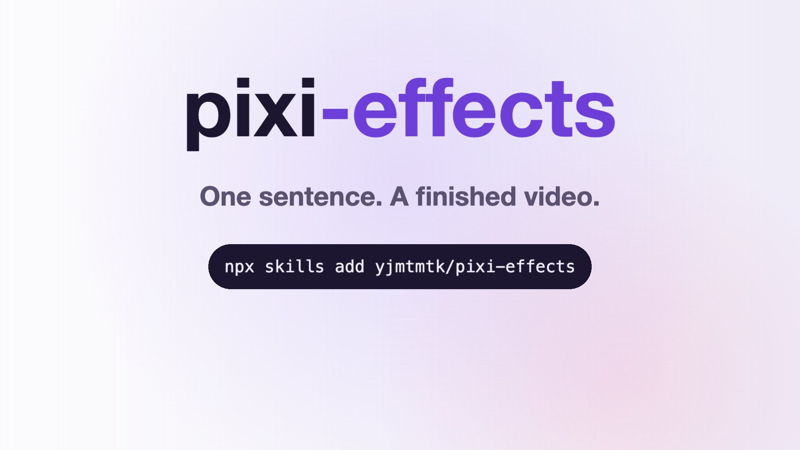

Use https://github.com/yjmtmtk/pixi-effects to make a video: a 12-second launch film for a fictional mechanical keyboard called "Clack" — the keyboard in 3D turning slowly under a soft spotlight, keys pressing in rhythm with a punchy beat, and the name slamming in at the end.
An AI with the pixi-effects repository open was asked for the main video of its website, in the messages below, and made this minute. Open your own project and ask the same.

> Make a promo video for this project. It will be the main video on its website, so make it about a minute long and show clearly what the project can do.
> In the scene "It checks its own work.", the contact sheet is just coloured bars in boxes, so it doesn't look like a real contact sheet: show small pictures of the earlier scenes instead. Also the "chart" label there is white on white.
> In the same scene the terminal window runs under the contact sheet: its right edge overlaps the sheet's left edge. Give each its own space with a clear gap between them.
✓ promo video delivered
Claude Opus
3 messages
14 min
unedited
best of 3
A few more messages
Start with one sentence, then say what to change. The whole conversation sits next to the result.
YouUse https://github.com/yjmtmtk/pixi-effects to make a video: a 15-second launch teaser for a coffee-ordering app called Brewly.
ThenWarmer colours, please, and let the phone screen show an order being placed.
ThenSlow the ending down and finish on the logo with “Download free”.
ThenThe corners of the phone screen stick out past the phone's rounded frame. Please fix that.
Claude Opus
4 messages
18 min
Start in 30 seconds
In Claude Code, Cursor or Codex
Add the skill once:
npx skills add yjmtmtk/pixi-effects
Then ask for a video, in any words. It checks its own work and renders the MP4.
In any chat
Paste one sentence and say what you want:
Use https://github.com/yjmtmtk/pixi-effects to make a video: …
You get one HTML page. Open it: the download button under the video saves the MP4.